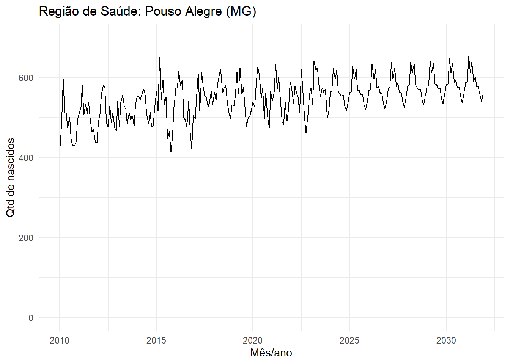
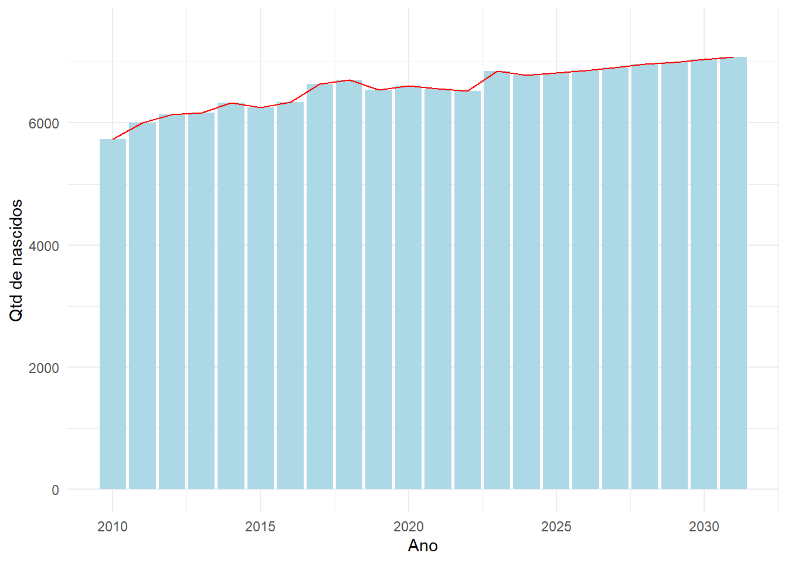
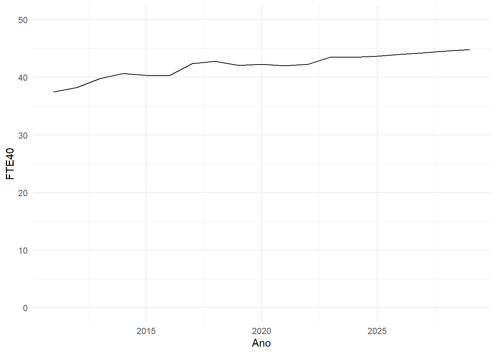

library(RODBC)
library(tidyverse)script_analises_sisdim
Análises para cuidado materno-infantil
Acessando dados
Acessando dados apenas da região de saúde de Pouso Alegre (MG).
dremio_host <- Sys.getenv("endereco")
dremio_port <- Sys.getenv("port")
dremio_uid <- Sys.getenv("uid")
dremio_pwd <- Sys.getenv("datalake")
channel <- odbcDriverConnect(sprintf("DRIVER=Dremio Connector;
HOST=%s;
PORT=%s;
UID=%s;
PWD=%s;
AUTHENTICATIONTYPE=Basic Authentication;
CONNECTIONTYPE=Direct",
dremio_host,
dremio_port,
dremio_uid,
dremio_pwd))
query_servico <-
'SELECT * FROM "@daniel"."nv_pouso_alegre"'
servicos <- sqlQuery(channel,
query_servico,
as.is = TRUE)
servicos <- servicos |>
mutate(mês_procedimento_realizado =
as.Date(mês_procedimento_realizado,
format = "%Y-%m-%d")) Plotando gráfico de nascidos
Plotando gráfico de nascidos por mês e ano.
nv_mes <-
servicos |>
select(competen, uf_sigla,
cod_regsaud, regiao_saude, qtd) |>
distinct() |>
mutate(qtd = round(qtd)) |>
mutate(mes_ano = as.Date(competen,
format = "%Y-%m-%d")) |>
mutate(ano = year(mes_ano))
nv_mes |>
ggplot(aes(x = mes_ano,
y = qtd)) +
geom_line() +
ylim(0, 700) +
xlab("Mês/ano") +
ylab("Qtd de nascidos") +
ggtitle("Região de Saúde: Pouso Alegre (MG)") +
theme_minimal()
Quantidade de nascidos por ano.
nv_mes |>
group_by(ano) |>
summarise(qtd_anual = sum(qtd)) # A tibble: 22 × 2
ano qtd_anual
<dbl> <dbl>
1 2010 5731
2 2011 6004
3 2012 6140
4 2013 6171
5 2014 6333
6 2015 6249
7 2016 6336
8 2017 6641
9 2018 6706
10 2019 6539
# ℹ 12 more rowsPlotando por ano.
nv_mes |>
group_by(ano) |>
summarise(qtd_anual = sum(qtd)) |>
ggplot(aes(x = ano,
y = qtd_anual)) +
geom_col(fill = "lightblue") +
geom_line(col = "red") +
ylim(0, 7500) +
xlab("Ano") +
ylab("Qtd de nascidos") +
theme_minimal()
Acessando procedimentos
Vamos acessar o total de procedimentos por mês
total_servicos <-
servicos |>
group_by(uf_sigla,
cod_regsaud,
regiao_saude,
codigo_sigtap,
procedimento,
tipo_procedimento,
Público,
nivel_atencao,
mês_procedimento_realizado,
) |>
summarise(total = sum(quantidade)) |>
rename(mes_proc_realizado = mês_procedimento_realizado) |>
mutate(ano_proc_realizado = year(mes_proc_realizado),
.after = mes_proc_realizado) `summarise()` has grouped output by 'uf_sigla', 'cod_regsaud', 'regiao_saude',
'codigo_sigtap', 'procedimento', 'tipo_procedimento', 'Público',
'nivel_atencao'. You can override using the `.groups` argument.Contagem por ano
servicos_mensal_anual <-
total_servicos |>
group_by(uf_sigla,
cod_regsaud,
regiao_saude,
ano_proc_realizado,
codigo_sigtap,
procedimento,
tipo_procedimento,
Público,
nivel_atencao) |>
summarise(total_procedimentos_anual = sum(total),
procedimentos_media_mensal = mean(total)) |>
mutate(total_procedimentos_anual =
round(total_procedimentos_anual),
procedimentos_media_mensal =
round(procedimentos_media_mensal))`summarise()` has grouped output by 'uf_sigla', 'cod_regsaud', 'regiao_saude',
'ano_proc_realizado', 'codigo_sigtap', 'procedimento', 'tipo_procedimento',
'Público'. You can override using the `.groups` argument.Lista de procedimentos.
lista_procedimentos <-
total_servicos |>
select(codigo_sigtap, procedimento) |>
distinct()Adding missing grouping variables: `uf_sigla`, `cod_regsaud`, `regiao_saude`,
`tipo_procedimento`, `Público`, `nivel_atencao`Lista de CBO e profissionais.
Transformação do total de procedimentos em tempos. Para isso, vamos criar uma função.
conversao_qtd_horas <-
function(tempo_imunizacao,
tempo_odonto,
tempo_visita_domc,
tempo_prenatal,
tempo_consulta_cd,
tempo_puerperal,
tempo_consulta_obs,
tempo_coleta,
tempo_acoes_educ,
tempo_pezinho,
tempo_coleta_cito,
tempo_orelhinha,
tempo_olhinho,
tempo_psico,
tempo_enfermeiro,
tempo_aso,
tempo_nutri,
tempo_fisio,
tempo_tec_enf,
tempo_parto,
tempo_toco,
tempo_coracaozinho,
tempo_eletro,
tempo_usg_morf,
tempo_usg_dop,
tempo_usg){
servicos_horas <-
servicos_mensal_anual |>
mutate(qtd_horas =
case_when(
codigo_sigtap == "1234" ~
procedimentos_media_mensal * tempo_imunizacao,
codigo_sigtap == "0301010153" ~
procedimentos_media_mensal * tempo_odonto,
codigo_sigtap == "0301010137" ~
procedimentos_media_mensal * tempo_visita_domc,
codigo_sigtap == "0301010110" ~
procedimentos_media_mensal * tempo_prenatal,
codigo_sigtap == "0301010080" ~
procedimentos_media_mensal * tempo_consulta_cd,
codigo_sigtap == "0301010129" ~
procedimentos_media_mensal * tempo_puerperal,
codigo_sigtap == "0301010072" ~
procedimentos_media_mensal * tempo_consulta_obs,
codigo_sigtap == "0202" ~
procedimentos_media_mensal * tempo_coleta,
codigo_sigtap == "0101010010" ~
procedimentos_media_mensal * tempo_acoes_educ,
codigo_sigtap == "0202110060" ~
procedimentos_media_mensal * tempo_pezinho,
codigo_sigtap == "0203" ~
procedimentos_media_mensal * tempo_coleta_cito,
codigo_sigtap == "0211070149" ~
procedimentos_media_mensal * tempo_orelhinha,
codigo_sigtap == "0211060275" ~
procedimentos_media_mensal * tempo_olhinho,
codigo_sigtap == "03010100480" ~
procedimentos_media_mensal * tempo_psico,
codigo_sigtap == "03010100481" ~
procedimentos_media_mensal * tempo_enfermeiro,
codigo_sigtap == "03010100482" ~
procedimentos_media_mensal * tempo_aso,
codigo_sigtap == "03010100483" ~
procedimentos_media_mensal * tempo_nutri,
codigo_sigtap == "03010100484" ~
procedimentos_media_mensal * tempo_fisio,
codigo_sigtap == "03010100485" ~
procedimentos_media_mensal * tempo_tec_enf,
codigo_sigtap == "0310010039" ~
procedimentos_media_mensal * tempo_parto,
codigo_sigtap == "0211040061" ~
procedimentos_media_mensal * tempo_toco,
codigo_sigtap == "0211020079" ~
procedimentos_media_mensal * tempo_coracaozinho,
codigo_sigtap == "0211020036" ~
procedimentos_media_mensal * tempo_eletro,
codigo_sigtap == "0205020500" ~
procedimentos_media_mensal * tempo_usg_morf,
codigo_sigtap == "0205020151" ~
procedimentos_media_mensal * tempo_usg_dop,
codigo_sigtap == "0205020143" ~
procedimentos_media_mensal * tempo_usg))
return(servicos_horas)
}Chamando a função.
servicos_horas <-
conversao_qtd_horas(
tempo_imunizacao = 0.25,
tempo_odonto = 0.5,
tempo_visita_domc = 0.75,
tempo_prenatal = 0.6,
tempo_consulta_cd = 0.45,
tempo_puerperal = 0.3,
tempo_consulta_obs = 0.55,
tempo_coleta = 0.2,
tempo_acoes_educ = 0.8,
tempo_pezinho = 0.15,
tempo_coleta_cito = 0.35,
tempo_orelhinha = 0.4,
tempo_olhinho = 0.3,
tempo_psico = 0.9,
tempo_enfermeiro = 0.7,
tempo_aso = 0.5,
tempo_nutri = 0.65,
tempo_fisio = 0.75,
tempo_tec_enf = 0.4,
tempo_parto = 0.95,
tempo_toco = 0.85,
tempo_coracaozinho = 0.25,
tempo_eletro = 0.3,
tempo_usg_morf = 0.6,
tempo_usg_dop = 0.5,
tempo_usg = 0.45
)
writexl::write_xlsx(servicos_horas,
"~/GitHub/materno_infantil_sisdim/02_output/pouso_alegre_servicos.xlsx")Mix de profissionais
Incluindo o mix de profissionais para calcular o total de horas de serviços por profissionais.
query_relacao <-
'SELECT *
FROM Dados."materno_infantil"."calendario_ajustado"."relacao_prof_proc.parquet"'
relacao <- sqlQuery(channel,
query_relacao,
as.is = TRUE)
proced_prof_qtd <-
relacao |>
group_by(codigo_sigtap,
procedimento) |>
count()
prof_cbo <- relacao |>
select(CBO, Profissional) |>
distinct()
#write.csv(relacao, "~/GitHub/materno_infantil_sisdim/00_dados/relacao_prof.csv")Juntando as bases para calcular os percentuais.
servicos_mix <-
servicos_horas |>
inner_join(relacao,
by = c("codigo_sigtap",
"procedimento")) |>
inner_join(proced_prof_qtd,
by = c("codigo_sigtap",
"procedimento")) |>
mutate(horas_prof = qtd_horas/n) |>
group_by(uf_sigla,
cod_regsaud,
regiao_saude,
ano_proc_realizado,
nivel_atencao,
Profissional) |>
summarise(total_horas_mensal =
sum(horas_prof)) |>
left_join(prof_cbo,
by = c("Profissional"))Warning in inner_join(servicos_horas, relacao, by = c("codigo_sigtap", "procedimento")): Detected an unexpected many-to-many relationship between `x` and `y`.
ℹ Row 1 of `x` matches multiple rows in `y`.
ℹ Row 15 of `y` matches multiple rows in `x`.
ℹ If a many-to-many relationship is expected, set `relationship =
"many-to-many"` to silence this warning.`summarise()` has grouped output by 'uf_sigla', 'cod_regsaud', 'regiao_saude',
'ano_proc_realizado', 'nivel_atencao'. You can override using the `.groups`
argument.Calculando o TTD
calculo_ttd <- function(ferias,
licencas,
ausencias){
ttd <- 160 - (ferias + licencas + ausencias)
calculo_ttd <-
servicos_mix |>
mutate(fte = total_horas_mensal/ttd)
return(calculo_ttd)
}
profissionais <- calculo_ttd(ferias = 8,
licencas = 14,
ausencias = 10)Gráfico de oferta de profissionais
profissionais |>
filter(nivel_atencao == "APS" &
Profissional == "Enfermeiro") |>
filter(ano_proc_realizado > 2010 &
ano_proc_realizado < 2030) |>
ggplot(aes(x = ano_proc_realizado,
y = fte)) +
geom_line() +
ylim(0,50) +
xlab("Ano") +
ylab("FTE40") +
theme_minimal() 
writexl::write_xlsx(profissionais,
"~/GitHub/materno_infantil_sisdim/02_output/pouso_alegre_profissionais.xlsx")